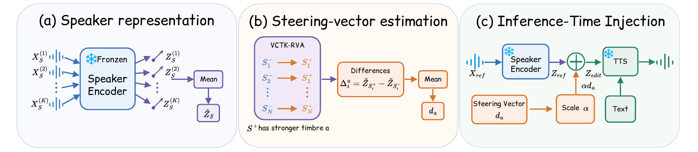

Prompt-based text-to-speech (TTS) conditions speech synthesis on reference audio that implicitly specifies overall voice characteristics. When reference recordings are limited, finding one that matches all desired timbre attributes is difficult, motivating control that adjusts a selected attribute relative to an available reference while preserving speaker identity. We propose a training-free method for relative vocal-timbre control using speaker-embedding steering vectors. For each attribute, we average consistently oriented differences between standardized speaker embeddings from VCTK-RVA comparisons to estimate a shared direction. At inference, the corresponding vector is scaled and added to the reference embedding, providing adjustable control over attribute enhancement. These directions are estimated once and reused across speakers, with the TTS model frozen and no attribute-editor training or per-speaker optimization. Experiments on Qwen3-TTS and dots.tts across seven attributes show transfer to unseen speakers and a tunable trade-off between timbre control and speaker preservation.

Select a timbre attribute, then drag the slider to control the steering strength α. All samples are synthesized by a frozen Qwen3-TTS backbone with only the speaker embedding steered at inference time.